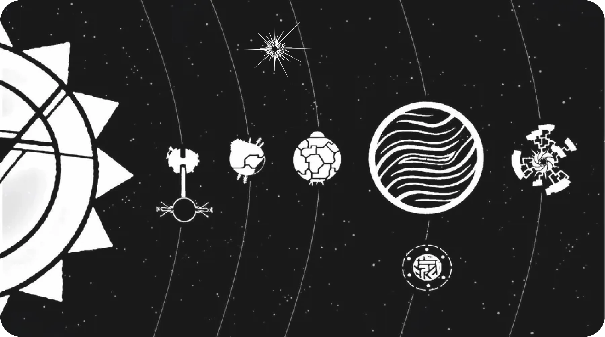

HISTORIA
Outer Wilds é uma aventura cósmica de mistério que se inicia no fim. O protagonista, um Hearthian explorador, se vê preso em um ciclo temporal de 22 minutos que termina inevitavelmente com a explosão do Sol em uma supernova. Este fenômeno catastrófico é, na verdade, o gatilho final para uma gigantesca máquina construída por uma civilização alienígena extinta, os Nomai, o Projeto Gêmeo Orbital. A máquina, que remete as memórias do explorador 22 minutos ao passado, foi originalmente criada pelos Nomai há milhares de anos. No entanto, ela ficou dormente após o extermínio da raça pela Matéria Fantasma, aguardando o momento de sua ativação para cumprir seu propósito: coletar o máximo de dados possível na esperança de encontrar o lendário Olho do Universo.
A Lore Central do jogo é desvendada por meio da arqueologia quântica em ruínas espalhadas por um sistema solar único e dinâmico, onde planetas se desintegram ou se transformam a cada ciclo. O jogador deve traduzir os antigos textos Nomai que explicam sua complexa ciência e sua jornada. Os Nomai vieram ao sistema atraídos por um sinal do Olho do Universo, um objeto mais antigo que o próprio universo, que eles acreditavam ser a chave para compreender o cosmos. A história de sua civilização, suas conquistas em manipulação do tempo e do espaço e seu trágico fim são as peças do quebra-cabeça que o jogador deve montar para entender o loop e a real natureza da missão Nomai.
O objetivo final do jogador não é escapar do ciclo, mas sim aceitar a morte cósmica do universo e utilizar o conhecimento reunido. Ao desvendar todos os segredos Nomai, o explorador consegue localizar o Olho do Universo, que se revela não apenas como um destino, mas como um catalisador para a criação de uma nova realidade. O final de Outer Wilds é uma meditação poética sobre o fim e o recomeço, onde o protagonista usa o tempo emprestado para presenciar o último suspiro do universo e fundir suas descobertas e memórias com o Olho, permitindo que a consciência coletiva de sua jornada e da civilização Nomai sirva de base para o ciclo cósmico subsequente, aceitando a beleza efêmera de um universo em constante mudança.
Riebeck
O arqueólogo e tocador de banjo do grupo. Riebeck é um pouco medroso e pode ser encontrado no Vale Incerto (Brittle Hollow), estudando as ruínas Nomai. Apesar do medo de altura e de buracos negros, sua paixão pela história Nomai o mantém firme em suas pesquisas.
O Viajante (Você)
O mais novo astronauta da Outer Wilds Ventures. Equipado com um detector de sinal e um tradutor Nomai, sua missão é explorar o sistema solar. Você é o único que se conecta a uma estátua Nomai e fica preso no loop temporal, revivendo os últimos 22 minutos antes que o Sol exploda.
Chert
Um astrônomo e percussionista (toca bateria) que pode ser encontrado observando as estrelas no Cânion da Lareira (Ember Twin). Chert é muito analítico e é o primeiro a notar que o Sol está morrendo mais rápido do que o esperado, ficando visivelmente mais ansioso a cada loop.
ATLAS COSMICO

Vale Incerto
Gravidade: 2.5x
Caracteristica: Tem um buraco negro no meio
Descrição: Um planeta oco com uma crosta geológica extremamente frágil. Sua superfície está em constante colapso, desmoronando e caindo em direção ao buraco negro que existe em seu centro. A lua vulcânica do planeta, a Lanterna de Lareira, bombardeia o Vale Incerto com meteoros de rocha derretida, acelerando sua destruição. Sob a superfície, os Nomai construíram a "Antiga Colônia" e a "Forja do Buraco Negro", um local crucial para entender a tecnologia de teletransporte.
Profundezas do gigante
Gravidade: 2x
Caracteristicas Frio, tempestades e agua
Descrição: Um imenso planeta gasoso coberto por um oceano global de água verde e densa, atormentado por ciclones colossais. A gravidade no Profundezas do Gigante é altíssima, e suas ilhas são constantemente arremessadas para a órbita e além pelos tornados gigantes. Abaixo da superfície turbulenta e da corrente oceânica, existe um núcleo elétrico surpreendentemente complexo que esconde um dos maiores segredos dos Nomai.

Gemeos da ampulheta
Gravidade: 1.5x
Caracteristicas: Quente, deserto e frio
Descrição: Estes são dois planetas que orbitam um ao outro, travados em uma dança gravitacional. O Cânion da Lareira (Ember Twin) é um planeta desértico cheio de cânions, que abriga a "Cidade Sem Sol", a principal metrópole subterrânea dos Nomai. O Recanto do Sol (Ash Twin) é um planeta árido que serve como receptor de toda a areia que é sugada do Cânion da Lareira por um pilar de areia gigante. Com o passar do loop, o Cânion da Lareira é soterrado, enquanto o Recanto do Sol revela segredos antigos em sua superfície, incluindo o vital Projeto Recanto do Sol.
Sol
Gravidade: 10x
Caracteristicas: Vai virar uma supernova
Descrição: O Sol é o astro central do sistema solar e o principal catalisador dos eventos do jogo. É uma estrela massiva e instável que está no fim de sua vida. A cada 22 minutos, o Sol entra em colapso e explode em uma supernova devastadora, aniquilando tudo no sistema e reiniciando o loop temporal. Embora seja principalmente uma ameaça, os Nomai construíram uma estação espacial (a Estação Solar) em sua órbita na tentativa de forçar essa explosão artificialmente, um projeto que falhou tragicamente.
Abrolho Sombrio
Gravidade: 2.5x
Caracteristicas: Planeta multidimensional, hostil e aterroziante
Descrução:O planeta mais aterrorizante do sistema. O Abrolho Sombria é, na verdade, uma semente de uma planta interdimensional que cresceu descontroladamente, quebrando o planeta de gelo original onde ela pousou. Seu interior é um labirinto confuso de neblina, vinhas e "nós" dimensionais, onde o espaço é distorcido. É o lar dos temíveis Lúcios (Anglerfish), predadores cegos que caçam pelo som, e é também o local onde a nave dos Nomai, a "Embarcação", caiu.
Recanto Lenhoso
Gravidade: 1x
Caracateristicas: Planeta cheio de vida, verde e com um clima habitavel
Descrição:Este é o planeta natal dos Herdianos (a espécie do jogador). É um mundo temperado, coberto por florestas de pinheiros, rios e gêiseres. É o local mais "normal" e seguro do sistema, servindo como ponto de partida para a aventura. O Recanto Lenhoso abriga a vila dos Herdianos, o observatório que rastreia o Olho do Universo e o museu que contextualiza a história. Sua lua, a Sonda, é usada para mineração e testes de lançamento do programa espacial.
O Xereta
Gravidade: 0.5x
Descrição: Um meteoro congelado enfestado com uma praga hostil
Um cometa elíptico coberto de gelo que viaja do sistema solar exterior para muito perto do Sol. O Xereta parece ser um pedaço de gelo inofensivo, mas rachaduras em sua superfície revelam um interior pressurizado. Os Nomai investigaram este cometa e descobriram algo terrível em seu núcleo: um centro preenchido com "Matéria Fantasma" (Ghost Matter) pressurizada, uma substância letal que matou quase todos os Nomai instantaneamente quando o cometa se rompeu.
Lua Quantica
Gravidade: 1.5x
Descrição: Impossivel de chegar? Lua fria e quantica? Qual planeta ela orbita?
Descrição: Um objeto misterioso que desafia as leis da física clássica. A Lua Quântica não possui uma localização fixa; ela orbita um dos seis locais principais (incluindo o Olho), mas só "existe" naquele local enquanto não está sendo observada. Para pousar nela, o jogador deve usar as regras quânticas, como tirar uma foto dela para "travar" sua posição. Sua superfície muda drasticamente dependendo de qual planeta ela está orbitando, e ela é a chave para encontrar o "Sexto Local".
Olho do universo
Gravidade: ????
Descrição: ???????
O objetivo final da jornada. O Olho é um objeto massivo e antigo, mais velho que o próprio universo, que emite um sinal misterioso detectado pelos Nomai (e posteriormente pelo observatório dos Herdianos). Ele é a fonte de toda a flutuação quântica no sistema solar. Os Nomai dedicaram toda a sua cultura à busca por este Olho, acreditando que ele detém a resposta para os segredos fundamentais da existência. Chegar até ele é o grande desafio do jogo.